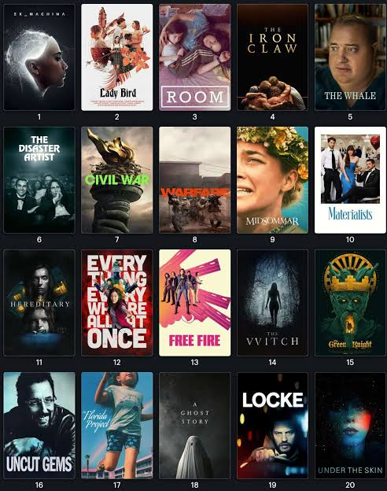
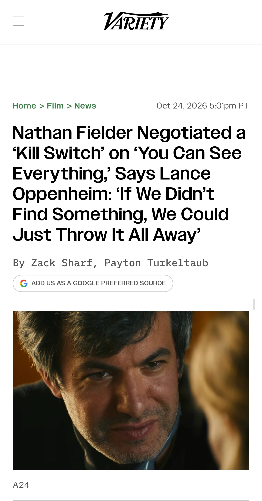
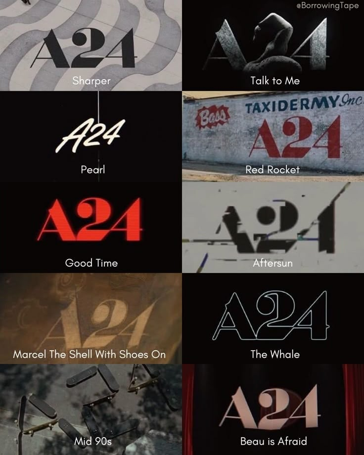

현재 전세계가 난리 났다는
신작 다큐멘터리 영화
'YOU CAN SEE EVERYTHING'
테라노스 사태의 핵심 인물
엘리자베스 홈스가 감옥에 들어가기
30일전 일상을 바로 옆에서 촬영 했다고 함

이 영화의 권리를 사려고 할리우드의
모든 대기업들이 경쟁을 했고
결국 인디 영화 전문 작은 회사
A24가 차지 하게 됐는데
감독의 인터뷰로 공개 된
제시 조건이 화제가 되는 중 이라고 함

https://variety.com/2026/film/news/nathan-fielder-you-can-see-everything-lance-oppenheim-1236916862/
랜스 오펨하임:
필더가 저와 이 작품을 준비 하면서
가장 많이 한 걱정이 뭐냐면
우리가 다루려는 이 이야기와 주제가
수없이 많이 거의 모든 형태로
이미 나올만큼 나왔다는겁니다
막상 이걸 찍었는데 딱히 새로운 내용이 없다면?
그래서 A24와 대화를 할때 뭐랬냐면
얼추 이런식으로 흘러갔습니다
"그 저기 그러니까 나랑 랜스가
홈즈를 찍으러 갈건데
우리가 달라는대로 자금을 주고
돈을 어떻게 쓰든 어떤식으로 찍든
우리 권리를 존중 하고 마음대로
할 수 있게 해줄 수 있어요?
그리고 만약 열심히 찍어봤는데
영 이거 아니다 싶으면 우리 선에서
촬영 그냥 끝내고 개봉 없이
그대로 파기 해도 됩니까?"
아주 아주 감사하게도
A24가 동의를 해줬죠
그리고 이 '파기 권리' 덕분에
그때부터 우리의 부담감이 사라지고
마음 편하게 촬영을 시작 할 수 있었습니다
홈즈가 교도소에 들어가기 전까지
딱 34일 남은 시점 이였죠
저나 필더나 이런 수준의 완벽한 자유를
보장 받고 어떤 일을 해본건 처음이였어요
우리가 맡는 일마다 이럴 수 있다면
얼마나 좋을까 싶었죠
왜냐면 이런 환경에서야말로 진짜로
순수한 호기심만 가지고 사물과 인물을
관찰 하고 촬영 할 수 있거든요
네이선 필더:
콕 찝어서 말할 수는 없지만
왠지 뭔가를 뽑을 수 있을거 같았어요
뭐가 될지는 정확히 몰라도
'세계가 환장 했던 그 여자가
한달 뒤에 감옥에 들어가는데
그 기간을 옆에서 촬영 하다 보면
뭐든 어떤게 나오지 않을까?'
이런 직감이 있었는데 만일 우리가 틀렸다면
작업물을 굳이 공개 하지 않고
없애버리고 싶다고 A24에 말했습니다.
여기에 회사가 동의 해준 덕분에
이번 작품이 나올수 있었어요
우리는 그녀에게도 또 회사쪽에도
그 어떤 눈치를 볼 필요가 없어졌으니
정말 있는 그대로를 찍고
실제 상황을 담아서 촬영 할 수 있었죠

이런 회사가 영화계에 있어서 다행이네
일단 찍어보고 아니면 걍 접을게요를 그러세요 할수있는 ㄷㄷㄷ